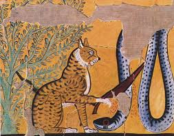

Cats have a long and fascinating history that goes back thousands of years. The relationship between humans and cats began when early farming communities started storing grains, which attracted mice and other pests. Wild cats helped control these pests, and over time, they became friendly companions to humans.
Ancient Egyptians had a deep respect for cats and considered them special animals. They were often associated with protection, good fortune, and grace. Cats were kept in homes to protect food supplies and were valued as loyal companions. They also appeared in Egyptian art and culture.

As humans traveled and explored new lands, cats spread across different parts of the world. They were often carried on ships because they helped control rodents. This allowed cats to become common animals in many countries and environments.
Today, cats are one of the most popular pets in the world. They are loved for their intelligence, playful nature, independence, and ability to form strong bonds with people. From ancient times to modern homes, cats have remained important companions to humans. 🐾